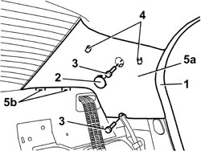
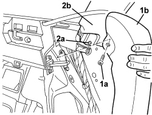
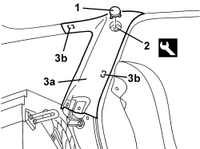

7040H42 REAR PILLAR TRIM (ONE), LEFT OR RIGHT- R.R
- Path
- Procedures > 70 FITTINGS > 7040 BODY INTERIOR FITTINGS AND TRIM > 7040H ROOF PANEL AND PILLARS LINING > 7040H42 REAR PILLAR TRIM (ONE), LEFT OR RIGHT- R.R
- Kind
- repair procedure (removal / refitting; the operation number is the code)
- Applies to
- all engines; all production periods
- Interactive page
- https://sloeber94.github.io/elrnDB/#/939011266
Applies to: all engines; all production periods
 Removing
Removing
 Refitting
RefittingOp. 7050A20 ONE-PIECE REAR SEAT CUSHION - R.R.
Present on the left and right sides
Op. 7040L44 REAR DOOR RUNNING BOARD (ONE), LEFT OR RIGHT - R.R.
Op. 7050A19 REAR SEAT BACKREST - R.R
1. Release the door housing seal in the area of the rear pillar cover.
2. Release the cover.
3. Undo the nuts.
4. Release the trim inner upper retainers.
5. Remove the pillar trim (5a) releasing it from the rear parcel shelf retainers (5b).

Applies to: all engines; all production periods
Refitting
Removing- Check that the trim is not damaged.
- Place the trim in position and attach it to the rear parcel shelf retainers.
- Attach the inner upper retainers.
- Tighten the nuts.
- Attach the cover.
- Fit the door housing seal.
Op. 7050A19 REAR SEAT BACKREST - R.R
Present on the left and right sides
Op. 7040L44 REAR DOOR RUNNING BOARD (ONE), LEFT OR RIGHT - R.R.
Applies to: all engines; all production periods; only with equipment: Station Wagon
Removing
Refitting- Lower the rear seat backrest.
1. Undo the bolt (1a) and move the rear side side panel (1b) slightly.
2. Undo the lower bolt (2a) for the rear pillar cover (2b).

Applies to: all engines; all production periods; only with equipment: Station Wagon
1. Release the cover.
2. Undo the bolt.
3. Remove the rear pillar cover (3a) releasing the inner retainers (3b) using the special tool.
Tool | Description | Function | Validity |
|---|---|---|---|
1823015000 | Knife | Retainer removal |

Applies to: all engines; all production periods; only with equipment: Station Wagon
Refitting
Removing- Check that the rear pillar cover is not damaged.
- Position the rear pillar cover and attach the inner retainers.
- Tighten the bolt.
- Attach the cover.
- Tighten the rear pillar cover lower bolt.
- Place the rear seat side panel in position and tighten the bolt.
- Raise the rear seat backrest.
Topics linked from this page (3)
- 7040L44 REAR DOOR RUNNING BOARD (ONE), LEFT OR RIGHT - R.R.
- 7050A19 REAR SEAT BACKREST - R.R
- 7050A20 ONE-PIECE REAR SEAT CUSHION - R.R.
Topics that link to this page (21)
- 5505B55 TAIL-GATE WIRING - R R
- 5505C28 ENGINE COMPARTMENT AND A.B.S BUILT-IN WIRING - R.R.
- 5505C41 PASSENGER COMPARTMENT WIRING - R.R
- 5570T27 AERIAL SUPPORT - R.R
- 5570T31 AERIAL COAXIAL LEAD - R R
- 5580C50 WINDOW BAG MODULE (ONE) LH OR RH - R.R
- 5580H16 REAR BUZZER OF PARKING OBSTICLE DETECTION DEVICE R R
- 5580T40 BOSE SOUND SYSTEM SUBWOOFER - R.R.
- 7015A14 TAILGATE - ADJUST CENTRING AND PROFILE - INCLUDES HINGE AND COMPARTMENT SEAL ADAPTATION
- 7015A24 TAILGATE HINGES - REPAIR OR REPLACE WITH TAILGATE REMOVED
- 7030B12 SLIDING ROOF (ASSEMBLY) - R+R
- 7030B40 DRAINAGE CHANNEL - R R
- 7030B50 SUN ROOF SLIDING GUIDE (ONE), LH OR RH - R.R
- 7035B14 REAR WINDOW GLASS - R.R INCLUDES CLEANING HOUSING
- 7035C14 FIXED REAR SIDE WINDOW (ONE) LEFT OR RIGHT - R.R INCLUDES CLEANING HOUSING
- 7040H10 ROOF PANEL LINING - R.R.
- 7040H16 ROOF PANEL LINING FOR VERSIONS WITH SUN ROOF - R.R
- 7040H68 TAI GATE HOUSING PILLAR TRIM (ONE), LH OR RH - R.R.
- 7040H80 REAR PARCEL SHELF - R.R.
- 7065B10 REAR SEAT BELT (ONE), LEFT OR RIGHT - R.R.
- 7065B18 CENTRE REAR SEAT BELT - R.R.